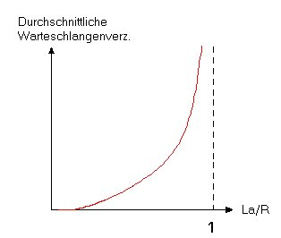
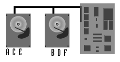
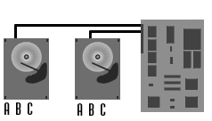
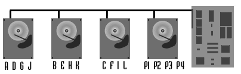
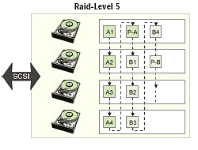
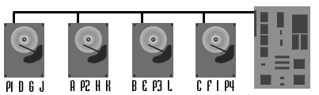
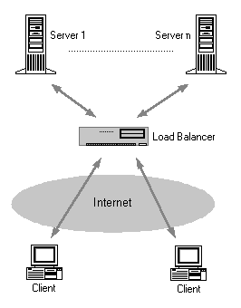

|
Internet-TechnologieProf. Jürgen Plate |
|
Internet-TechnologieProf. Jürgen Plate |
Bei der Übertragung kontinuierlicher Medien sind noch weitere spezielle Qualitätsparameter relevant:
Die Gesamtverzögerung eines Knotens kann dann definiert wwerden als:
dnodal = dproc + dqueue + dtrans + dprop
Wobei
dproc die Verarbeitungssverzögerung,
dqueue die Warteschlangenverzögerung,
dtrans die Übertragungsverzögerung und
dprop die Ausbreitungsverzögerung
darstellt. Der Anteil dieser Verzögerungskomponenten schwankt
beträchstlich. So kann dprop innerhalb eines Campus
wenige Mikrosekunden betragen, bei einem Satellitenlink dagegen
einige huntert Millisekunden. Ebenso kann dtrans bei
einem 100-MBit-Netz minimal sein, aber bei einer Modemverbindung
durchaus heftig zu Buche schlagen.

Betrachten wir nun den anderen Fall L*a/R <= 1: Hier wirkt sich die Art des ankommenden Verkehrs auf die Verzögerung aus. Kommen die Pakete periodisch, z. B. ein Paket alle L/R Sekunden, trifft jedes Paket auf eine leere Warteschlange und es entsteht keine Wartezeit. Kommen N Pakete gleichzeitig (z. B. alle (L/R)*N Sekunden), entsteht für das erste Paket keine Verzögerung, das zweite muß L/R Sekunden warten und das n-te Paket hat eine Wartezeit von (n - 1)*(L/R) Sekunden.
Normalerweise kommen die Pakete aber nicht periodisch, sondern zufällig an einer Warteschlange an. Meist reicht der einfache Ansatz der Größe L*a/R nicht aus, um die reale Situation zu beschreiben. Sie liefert aber nach wie vor einen groben Ansatz. Es git auch weiterhin der oben abgebildete Ansatz, daß bei einer Verkehrsintensität nahe 0 keine Warteschalngenverzögerung entsteht. Geht dagegen ihr Wert gegen 1 wächst die Wartezeit rasch stark an. Bei einer Verkehrsintensität nahe 1 führen Bursts zum starken Füllen der Warteschlange.
dend-end = Q*(dproc + dtrans + dprop)
dtrans ist wiederum L/R mit der Paketgröße L. Das ist natürlich eine sehr idealisierte Annahme. Eine (komplexere) Formel für heterogene Verzögerungen an den Knoten läßt sich daraus leicht ableiten.
#!/bin/sh
# Zugriffsstatistik
#
DATEI=/home/httpd/stat/stat.txt
{
cd /home/httpd/stat
echo ""
echo "abgerufene Dokumente `date --date '1 days ago' '
echo "-----------------------------"
echo ""
echo " Anz. Datei"
echo ""
grep "$SUCH" /var/log/httpd.access_log | \
grep "$AKT" | \
sed -e 's?^/.*/??' -e 's?^/??' -e 's? HTTP.*$??' | \
grep ".html" | \
sort | \
uniq -c
} > $DATEI
Etwas komfortabler ist die Statistik, die das folgende Perl-Programm liefert.
Die umfangreicheren Statistikprogramme liefern oft nur Zusammenfassungen
und die am häufigsten abgerufenen Seiten. Aus dem Skript unten kann man
sich auch durch ein paar kleine Änderungen eine maßgeschneiderte Statistik
für ganz bestimmte Seiten anfertigen. Dazu kann man die Variablen
\$include und \$exclude mit geeingeten regulären Ausdrücken
belegen. Die Balkengrafiken werden durch kleine Tabellen erzeugt, deren Maße
vom Programm entsprechend der Statistik berechnet werden.
#!/usr/bin/perl
# Die folgenden Variablen muessen an die lokale Konfiguration
# angepasst werden.
# Zeichenkette(n), die in der Protokollzeile auftauchen muessen.
#
# Sie koennen auch mehrere Strings angeben, z.B.
# $include="laber/eins|laber/zwei";
#
# $include = "ALL"; nimmt alle Protokollzeilen, mit Ausnahme der
# durch $exclude ausgeschlossenen.
$include="ALL";
# Protokollzeilen, die diese Strings enthalten, werden
# bei der Berechnung der Statistik ausgeschlossen
# (hier: Graphiken und Aufrufe von CGI Programmen).
#
# Mehrere Strings wieder durch "|" trennen.
$exclude = "gif|jpg|png|cgi";
# Name und Pfad der Webserver-Logdatei
$LOGDATEI = "/var/log/any-access_log";
# Farbe der Balken fuer die Stundenstatistik
$scolor = "#FFFF00";
# Farbe der Balken fuer die Tagesstatistik
$wcolor = "#FF00FF";
# Das wars! Ab hier muss nichts mehr geaendert werden!
###################################################
&datum;
&open_logfile;
&calc_access;
𝕜
&general;
&by_hour;
&by_date;
&by_html;
&fuss;
sub open_logfile
# Server-Logdatei oeffnen
{
open (LOG,"$LOGDATEI") || die "Kann $LOGDATEI nicht oeffnen!\n";
while ($line = <LOG>)
{
chomp($line);
if ((($line = /$include/) || ($include eq "ALL"))
&& ($line ! /$exclude/i))
{ push(@lines,$line); }
}
close(LOG);
}
sub calc_access
# Daten aus der Logdatei extrahieren
{
$i = 0;
$currentdate = "";
foreach (@lines)
{
($site,$j1,$j2,$when,$j3,$j4,$page,$j5,$number,$bytes) = split;
$page= s/ ($date,$hour,$minute,$second)=split(':',$when);
$hour= s/^0//;
# Wenn Datum gleichbleibt, inkrementiere Counter fuer dieses Datum
if ($date eq $currentdate)
{ $counter[$i]++; }
# Naechster Tag (Tageszaehler ist die Variable $i)
else
{
$i++;
$currentdate=$date;
$counter[$i]++;
}
($firstdate) || ($firstdate=$date);
($day,$month,$year) = split('/',$date);
$date = "$year/$month/$day";
$date= s/\[//;
$dates{$date}++; # Anzahl Zugriffe pro Tag
$hours{$hour}++; # Anzahl Zugriffe pro Stunde
$pages{$page}++; # Anzahl Zugriffe pro FILE
$totalbytes = $totalbytes + $bytes;
}
if ($totalbytes < 10)
{
print "<html><head>\n";
print "<title>Keine Abrufe für $include.</title>\n";
print "</head><body>\n";
print "<h1 align=center>Keine Abrufe für $include.</h2>\n";
print "Für das Verzeichnis (die Verzeichnisse) <b>$include</b>\n",
print "wurden im letzten Monat keine Abrufe verzeichnet.\n";
print "</body></html>\n";
exit;
}
}
sub kopf
# Seitenkopf, kann erweitert/angepasst werden
{
print "<HTML>\n";
print "<head><title>Zugriffs-Statistik</title></head>\n";
print "<body bgcolor=\"#ffffff\" text=\"#000000\"\n";
print "link=\"#0000ff\" vlink=\"#cc00cc\">\n";
if ($include eq "ALL")
{ print "<H2 ALIGN=CENTER>Zugriffstatistik</H2>\n"; }
else
{ print "<H2 ALIGN=CENTER>Zugriffstatistik für $include</H2>\n"; }
print "<H4 ALIGN=CENTER>$long_date</H4>\n";
}
sub general
# allgemeine Statistikwerte
{
$firstdate= s/\[//;
$firstdate = s/^0//;
print "<H2>Allgemeine Daten</H2>\n";
print "<B>Auswertungszeitraum:</B> $firstdate bis $date_2<BR>\n";
print "<B>Gesamtzahl aller Zugriffe:</B> $#lines <BR>\n";
print "<B>Gesamtvolumen (in Bytes):</B> $totalbytes <BR>\n";
}
sub by_hour
# Stunden-Statistik berechnen
{
print "<H2 ALIGN=CENTER>Zugriffsstatistik nach Tageszeit</H2>\n";
print "<TABLE BORDER=1 CELLPADDING=3 ALIGN=CENTER><TR><TD>\n";
print "<TABLE BORDER=0 CELLPADDING=3 ALIGN=CENTER>\n<TR>";
$highest=0;
# ermittle maximale Anzahl von Zugriffen zu einer Stunde
foreach $key (keys {
if ($hours{$key} > $highest)
{ $highest=$hours{$key}; }
}
foreach $key (keys {
$barsize{$key} = int(($hours{$key} * 250) / $highest);
}
foreach $key (0..23)
{
if ($barsize{$key} < 2)
{ $barsize{$key} = 2; }
print "<TD ALIGN=CENTER VALIGN=BOTTOM>\n";
print "<I>$hours{$key}</I><BR>\n";
# als einspaltige Tabelle mit variabler Hoehe realisiert
print "<TABLE BORDER=0 BGCOLOR=\"$scolor\"\n";
print " HEIGHT=$barsize{$key} WIDTH=10>\n";
print "<TR><TD>&nbsp;</TD></TR></TABLE>\n";
print "</TD>\n";
}
print "</TR>\n<TR>\n";
foreach $key (0..23)
{
print "<TH ALIGN=CENTER>$key</TH>\n";
}
print "</TR>\n<TR>\n";
print "<TH ALIGN=CENTER colspan=24>Uhrzeit</TH>\n";
print "</TR>\n";
print "</TABLE>\n";
print "</TD></TR></TABLE>\n\n";
}
sub by_date
# Tages-Statistik berechnen
{
$highest=0;
undef foreach $key (keys {
if ($dates{$key} > $highest)
{ $highest=$dates{$key}; }
}
foreach $key (keys {
$barsize{$key} = int(($dates{$key} * 350) / $highest);
}
print "<H2 ALIGN=CENTER>Abrufstatistik der letzten 30 Tage</H2>\n";
print "<TABLE BORDER=1 CELLPADDING=3 ALIGN=CENTER><TR><TD>\n";
print "<TABLE ALIGN=CENTER BORDER=0 CELLPADDING=3>\n";
foreach $tag (sort {$a cmp $b} (keys {
print "<TR><TD ALIGN=RIGHT VALIGN=MIDDLE><TT>$tag</TT></TD>\n";
print "<TD><B>$dates{$tag}</B></TD>\n";
print "<TD ALIGN=LEFT VALIGN=MIDDLE>\n";
# Balken wird als einzeilige Tabelle mit variabler Breite realisiert
print "<TABLE BORDER=0 BGCOLOR=\"$wcolor\"\n";
print " HEIGHT=20 WIDTH=$barsize{$tag}>\n";
print "<TR><TD>&nbsp;</TD></TR></TABLE></TD>\n";
print "</TR>\n";
}
print "</TABLE>\n";
print "</TD></TR></TABLE>\n\n";
}
sub by_html
# Zugriffs-Statistik aller Seiten
{
print "<H2 ALIGN=CENTER>Zugriffe pro HTML-Seite</H2>\n";
print "<TABLE BORDER=1 CELLPADDING=3>\n";
# sortiere die WWW-Seiten vor der Augabe
foreach $page (sort(keys {
$page= s/[<>]//g;
print "<TR><TD> <a href=$page>$page</a> </TD>";
print "<TD><B> $pages{$page} </B></TD></TR>\n";
}
print "</TABLE>\n\n";
}
sub fuss
# Seitenende, kann erweitert/angepasst werden
{
print "</body>\n";
print "</html>\n";
}
sub datum
# Datum in brauchbaren Formaten erzeugen
{
($sec,$min,$hour,$mday,$mon,$year,$wday,$yday,$isdst)
= localtime(time);
if ($sec < 10) { $sec = "0$sec"; }
if ($min < 10) { $min = "0$min"; }
if ($hour < 10) { $hour = "0$hour"; }
if ($mon < 10) { $mon = "0$mon"; }
if ($mday < 10) { $mday = "0$mday"; }
$month = $mon + 1;
$year = $year + 1900;
@months1 = ("Januar","Februar","Maerz","April","Mai",
"Juni","Juli","August","September","Oktober",
"November","Dezember");
@months2 = ("Jan","Feb","Mar","Apr","May","Jun","Jul",
"Aug","Sep","Oct","Nov","Dec");
$date_1 = "$mday.$month $year";
$date_2 = "$mday/$months2[$mon]/$year";
$long_date = "$mday\. $months1[$mon] $year ($hour\.$min Uhr)";
}
Das Programm liefert eine Webstatistik der letzten 12 Monate. In der Übersicht sehen Sie die monatlichen Daten im Vergleich:
Die Unterstützung verschiedener Sprachen ist leider etwas archaisch, denn es müssen die passenden Headerdateien einkompiliert werden -- es ist also auch das komplette Quellpaket erforderlich. Für eine Installation in Deutsch (und in anderen Sprachen) stellen z.B. die DLR oder die schwedische Firma Chalmers die Quellen zum Download bereit.
http://www.go.dlr.de/fresh/unix/src/www/.warix/webalizer-2.01-06-src.tgz.html
http://swamp.chl.chalmers.se/pub/www/tools/webalizer/
Im Folgenden wird eine relativ einfache Konfiguration beschrieben. Webalizer bietet darüber hinaus weitere Features, die in der beiliegenden Dokumentation beschrieben sind.
Wer die Installation mittels der Quell-Dateien vornimmt, muß diese auf normalem Wege mit der üblichen Befehlsfolge kompilieren. Die genaue Anleitung mit den Optionen, die bei ./configure möglich sind, kann man in der einfachen Installationsanleitung der Webalizer-Homepage nachlesen.
Es werden hier nur die wichtigsten Optionen der Konfigurationsdatei besprochen. Die Datei heißt standardmäßig webalizer.conf und sollte, damit sie beim Start des Webalizers ohne Pfadangabe gefunden wird, am besten in /etc/ stehen. Um sie zu benutzen, wird der Durchlauf dann einfach mit webalizer gestartet. Benutzt man verschiedene Konfigurationsdateien für verschiedene Aufgaben, so muß außer bei Benutzung von /etc/webalizer.conf als Konfigurationsdatei dem Programm stets der Pfad mit der Option -c mitgegeben werden. So lassen sich beispielsweise für jeden virtuellen Server getrennte Statistiken erstellen.
Nun wird die Konfigurationsdatei mit dem Editor bearbeitet. Suchen Sie die Zeile:
#LogFile /var/lib/httpd/logs/access\_logEntfernen Sie das Kommentarzeichen (#) und ersetzen Sie die Pfadangabe mit dem Pfad zu Ihrem Apache-Logfile. In der Konfigurationsdatei muß angegeben werden, welche Logdatei benutzt werden soll, d.h. es gibt hier keine Voreinstellung.
LogFile /var/log/httpd/access\_logEs gibt mehrere Logfile-Formate, die benutzt werden können, das Standardformat heißt clf. Ebenso funktioniert der Durchlauf mit gezippten Logfiles im gz-Format, was man vielleicht nutzen möchte, weil man ab und zu große Logfiles packen will, um Plattenplatz zu sparen.
Dann sollten Sie das Verzeichnis angeben, in dem die Ergebnisse gespeichert werden sollen. Suchen Sie nun die Zeile:
#OutputDir /var/lib/httpd/htdocs/usageEntfernen Sie das Kommentarzeichen und ersetzen Sie die Pfadangabe mit der zu dem Verzeichnis, in dem Sie die Berichte ablegen möchten. Dieses sollte sich in Ihrem Webverzeichnis befinden. Zum Beispiel:
OutputDir /opt/www/htdocs/webalizerEs empfiehlt sich natürlich, eigene Verzeichnisse für die Ausgabe zu erstellen. Falls man mit verschiedenen Konfigurationsdateien verschiedene Jobs erledigt, sollte man natürlich auch in der jeweiligen .conf-Datei das jeweilige Ausgabeverzeichnis angeben, da sonst Daten überschrieben werden oder, je nach Einstellung, neue Daten an solche angehängt werden, die überhaupt nicht dazu passen. Suchen Sie dann die Zeile:
#Incremental noEntfernen Sie das Kommentarzeichen und ersetzen Sie "no" durch "yes". Hiermit weisen Sie Webalizer an, den Stand des Logfiles zu speichern und beim nächsten Aufruf an dieser Stelle fortzusetzen. Suchen Sie die Zeile
#ReportTitle Usage StatisticsEntfernen Sie das Kommentarzeichen und ersetzen Sie den Eintrag durch einen Titel Ihrer Wahl. Suchen Sie dann die Zeile
#HostName localhostEntfernen Sie das Kommentarzeichen und tragen Sie Ihren Hostnamen ein.
Danach folgen viele eher unwichtige bzw. defaultmäßig richtig oder sinnvoll eingestellte Parameter (siehe Holzmann/Plate). Speichern Sie die Datei webalizer.conf.
webalizer -c /etc/webalizer.confDer manuelle Aufruf ist auf Dauer natürlich nicht besonders praktisch. Besser ist da ein Eintrag für den Cron-Mechanismus. Man kann z.B. in die Datei /etc/crontab folgenden Eintrag aufnehmen:
30 4 * * * root /opt/www/bin/webalizer > /dev/null 2>&1Gegebenenfalls sind noch die Parameter -p für den inkrementellen Modus oder -c file zur Angabe der Konfigurationsdatei nötig. Weitere Parameter listet die Manualpage auf. Die Statistik rufen Sie mit Hilfe der Datei index.html im durch OutputDir spezifizierten Verzeichnis ab.
/opt/www/htdocs/ftpstatsNun wird eine zweite Konfigurationsdatei erzeugt, die für die Analyse der FTP-Daten angepaßt ist. Dazu kopieren Sie einfach die originale Datei /etc/webalizer.conf auf /etc/ftpstats.conf und ändern diese Datei ab. Dabei sind nur drei Zeilen zu modifizieren:
LogFile /var/log/xferlog LogType ftp OutputDir /opt/www/htdocs/ftpstatsWichtig ist dabei besonders der LogType, damit Webalizer auch alles richtig macht. Das Programm kennt zwei Typen "web" und "ftp", wobei "web" die Voreinstellung ist. Mit dem Aufruf
webalizer -c /etc/ftpstats.confkann dann die FTP-Statistik abgerufen werden.
/opt/www/htdocs/squidstatsNun wird eine weitere Konfigurationsdatei erzeugt, die für die Analyse der Squid-Daten angepaßt ist. Dazu kopieren Sie einfach die originale Datei /etc/webalizer.conf auf /etc/squidstats.conf und ändern diese Datei ab. Dabei sind auch wieder nur drei Zeilen zu modifizieren:
LogFile /var/squid/logs/access.log LogType web OutputDir /opt/www/htdocs/squidstatsDiesmal wird wieder der LogType "web" verwendet. Die Auswertung funktioniert aber nur, wenn die Logdatei des Squid das richtige Format besitzt. Statt des Standardformats der Squid-Logs muß der Squid seine Logdateien im "Apache-Stil" abliefern. Das erreichen Sie durch die Einstellung emulate\_httpd\_log on in der Datei squid.conf. Mit dem folgenden Aufruf kann dann die Proxy-Statistik abgerufen werden:
webalizer -c /etc/squidstats.conf
Die Ergebnisse des Benchmarks können als Anhaltspunkt für das Verhalten und die Geschwindigkeit der getesteten Hardware oder Software im realen Einsatz geben. Wie nahe diese Ergebnisse jedoch wirklich mit der Realität übereinstimmen, hängt vom verwendeten Benchmarkprogramm und seiner Abbildung des realen Betriebs ab. Bei der Auswertung der Ergebnisse muss deshalb immer beachtet werden, dass die Ergebnisse nur als Annäherung an die tatsächliche Leistung gesehen werden können. Dennoch können Benchmarks Anregungen für Optimierungen liefern.
Bei real existierenden Webservern spielt im Allgemeinen die Stabilität und Sicherheit eine höhere Rolle als die Performance des Systems. Die Stabilität läßt sich nur schwer messen, jedoch zeigt eine c't-Analyse zur Verfügbarkeit von Web-Servern, dass NT-Server deutlich mehr und auch längere Ausfallzeiten aufwiesen als Unix-Systeme.i
Die Website www.attrition.org führt zu Dokumentationszwecken alle durch Hacker verunstalteten Webseiten, die den Betreibern bekannt werden. Außerdem führen sie eine Statistik über die betroffenen Betriebssysteme. In dieser nimmt Windows NT mit rund zwei Dritteln aller Vorfälle einen Spitzenplatz ein.
Tests diverser Computerzeitschriften haben ergeben, daß Linux unabhängig von der Art der Systemlast mindestens so gut wie Windows 2000, bei Datenbankabfragen teilweise sogar besser skaliert. Bei der Erstellung dynamischer Webseiten skalieren beide Systeme mit der Zahl der CPUs. Bei bis zu vier CPUs wächst die Systemleistung linear an, allerdings nur, solange nicht andere Faktoren, wie die Bandbreite der Netzanbindung die Grenze für die Leistung bilden. Bei beiden Betriebssystemen zeigt sich jedoch dann auch, dass bei einer Erweiterung auf mehr als vier CPUs die Ergebnisse nicht mehr linear anwachsen.
Artikel dazu:
Der Apache-Webserver ist wenig anfällig gegen Betriebsstörungen gleich welcher Art. Er Server besteht aus einem Managerprozeß, der eine Reihe von Bearbeiterprozessen startet (preforking). Eingehende Requests werden vom Master registriert und an einen freien Bearbeiter weitergereicht. Wenn der Bearbeiter mit der Ausführung des Requests fertig ist, beendet er sich nicht, sondern meldet sich beim Manager zurück, und dieser teilt dem Bearbeiter den nächsten Request zu.
Ein Bearbeitungsprozeß ist oftmals nicht in der Lage, einen Prozessor voll auszulasten: Er muß auf das Eintreffen von Daten von der Festplatte warten, oder er muß auf den Client auf der anderen Seite des Netzes warten und sich mit der Abarbeitung des Requests nach der Übertragungsgeschwindigkeit des Netzes richten. Damit während dieser Zeit andere Requests bearbeitet werden können, ist es sinnvoll, mehrere Bearbeiterprozesse zu haben.
Wie viele Bearbeiterprozesse sinnvoll sind, hängt von einer
ganzen Reihe von Parametern ab. Zunächst einmal wäre es
sicherlich schön, wenn immer genau so viele Bearbeiter vorhanden
sind, wie gleichzeitige Requests bei der Maschine ankommen. Nun
kann ein Rechner aber nicht beliebig viele Prozesse starten, und
speziell im Fall von Apache ist es so, daß der Webserver in
genau dem Moment sehr viel langsamer wird, in dem die Maschine
anfangen muß, Webserverprozesse mangels RAM in den Swapbereich
auszulagern. Das ist ein sehr unangenehmer Moment, denn bei
gleichbleibender Anzahl von Requests pro Sekunde ("Last bleibt
gleich") dauert die Abarbeitung eines einzelnen Requests nun
viel länger ("Durchsatz sinkt"), und damit steigt die Anzahl der
ausstehenden Requests ("Ressourcenverbrauch steigt"). Das
Gesamtsystem versucht darauf mit einer weiteren Erhöhung der
Serverprozeßzahl zu antworten und treibt die Maschine nur noch
weiter in den Swap - die Requests werden noch langsamer
bearbeitet und als Antwort werden nur um so mehr
Serverprozesse erzeugt.
In dieser Situation bricht die Systemleistung zusammen, oder das
System kommt im Extremfall vollständig zum Halt. Mit Hilfe des
Parameters "MaxClients" kann man in der httpd.conf die Anzahl
der Serverprozesse nach oben begrenzen und so verhindern, daß
die Maschine in diesen fatalen Zustand gerät - die Zahl muß so
gewählt werden, daß die Maschine sicher nicht ins Swappen gerät.
Als hilfreich hat sich hier die Analyse der Zahlen in
/proc/<pid>/statm erwiesen, wobei als <pid> die Prozeßnummern
der httpd-Prozesse einzusetzen sind:
plate@atlas:~ > server=`grep -l httpd /proc/*/cmdline` plate@atlas:~ > echo $server /proc/12366/cmdline /proc/16768/cmdline /proc/16769/cmdline /proc/16892/cmdline /proc/23378/cmdline /proc/24373/cmdline /proc/3474/cmdline /proc/self/cmdline plate@atlas:~ > for i in $server; do cat `dirname $i`/statm; done 1090 1005 951 40 0 965 576 1327 1242 919 49 0 1193 777 1330 1245 919 49 0 1196 780 1117 1032 968 48 0 984 575 1341 1256 918 49 0 1207 791 1117 1032 968 48 0 984 575Die ausgegebenen Zahlen sind in /usr/src/linux/Documentation/proc.txt genauer erläutert. Sie bedeuten von links nach rechts:
size total program size resident size of in memory portions shared number of the pages that are shared trs number of pages that are 'code' drs number of pages of data/stack lrs number of pages of library dt number of dirty pagesDer Gesamtspeicherverbrauch eines Serverprozesses ergibt sich aus seinen resident (im RAM befindlichen) Unshared Pages (Page-Größe 4 KB in Intel-Rechnern). Also ist die Differenz zwischen der zweiten und der dritten Zahl einer jeden Zeile zu bilden und mit vier zu multiplizieren, um den RAM-Verbrauch eines einzelnen httpd in KByte zu ermitteln. Bei obiger Tabelle ergibt sich (auf ganze KByte gerundet):
(1005 - 951)/4 = 14 (1242 - 919)/4 = 80 (1245 - 919)/4 = 80 (1032 - 968)/4 = 16 (1256 - 918)/4 = 85 (1032 - 968)/4 = 16Bei einem geeigneten Wert für MaxClients erzielt der Apache-Webserver bei zunehmender Last ("ramp-up") linear mehr Durchsatz, bis der Sättigungspunkt erreicht ist. Danach bleibt die Leistung auf einem stabilen Plateau, wenn nicht ein anderer leistungsbegrenzender Faktor wirksam wird (Netzbandbreite, DNS-Lookups, Plattenbandbreite, CPU-Leistung).
Bei nachlassender Last reduziert der Managerprozeß die Anzahl der
Serverprozesse bis auf "MaxSpareServers". Bei steigender Last
wird der Manager diese Zahl dann wieder steigern. Da das Starten von
neuen Serverprozessen einige Zeit dauert, bleiben immer "MinSpareServers"
aktiv. Je stärker und je schneller die Last auf einem Webserver
springt, um so größer sollte man den Abstand zwischen beiden
Werten wählen. Je langsamer die Maschine beim Starten von neuen
Serverprozessen ist und je ruckartiger die Last auf dem Server
ansteigen kann, um so höher muß man MinSpareServers wählen,
damit im Falle einer Spitzenlast schon ausreichend viele Server
vorhanden sind.
(Nach einem Aufsatz von Kristian Köhntopp)
Dann kann noch die Konfiguration und das Umfeld optimieren:
Da SWbench ein recht schlichtes Programm ist, eignet es sich nur für sehr grobe Tests. Eine Beschreibung von SWbench erläutert die Aufrufparameter.
Interessanter ist hier Hammerhead 2, das unter http://hammerhead.sourceforge.net/ heruntergeladen werden kann. Dieses Tool ist einfach konfigurierbar (Datei /etc/hammerhead/hh.conf bearbeiten). Hammerhead 2 kann mehrere Verbindungen gleichzeitig öffnen und dabei auch Anfragen von verschiedenen IP-Aliasen und bis zu 256 verschiedenen Usern generieren. Nach der voreingestellten Testzeit liefert das Tool einen aussagekräftigen Report. Neben Anzahl der Threads, Timeout-Schwellen, Test-Zeit, Usern lassen sich noch viele weitere Parameter einstellen. Man kann sogar Erwartungswerte für Ergebnisse eingeben, die dann mit den realen Resultaten verglichen werden. Hammerhead 2 wartet bei jedem Request auf Antwort vom Server. Ist der Server schlecht angebunden, kann es vorkommen, daß die voreingestellte Request-Rate unterschritten wird. Auch kann das Programm nur so schnell arbeiten, wie der Computer auf dem es Läuft die Netzwerkanforderungen bedient.
Hier - wie auch bei all den anderen Testprogrammen - sollte man die Tests auf lokale Server loslassen, sonst kann es ärger mit dem Provider geben (der vielleicht eine Denial-of-Service-Attacke vermutet) oder teuer werden (wenn nach Volumen bezahlt wird).
Aber oft soll nicht nur eine Netzverbindung getestet werden (überlegen Sie mal, wie man einen Mailserver per POP3-Anfrage testen könnte), sondern der Server selbst. Laufen alle Prozesse flüssig, sind CPU- oder Plattenlast im grünen Bereich? Für diesen Zweck eignet sich stress (http://weather.ou.edu/~apw/projects/stress/), das gezielt den Rechner stressen kann. So sorgt der Aufruf
stress --loadavg 20für eine entsprechende CPU-Last (+/- 20%). Mit
stress --hogdisk 1000m testwerden 1 GByte Daten in die Datei "test" geschrieben. Ansonsten ist das Programm sehr schlicht zu bedienen, die Hilfe-Ausgabe liefert weitere Optionen:
stress 1.16
usage: stress [flag [arguments]]
flags: --hogio [n] (make n sync(2) calls)
--loadavg [n] (bring load avg up to n)
--hogcpu [n] (make n sqrt(3) calls)
--hogmemory [n s] (malloc(3) n pages of s bytes)
--hogdisk [n f] (fputs(3) n bytes to file f)
valid number suffixes: k, m, g (i.e. 4k => 4096)
Viele Linux-Distributionen enthalten MRTG und die zusätzlich benötigten Programme und Bibliotheken bereits. Ist das ausnahmsweise nicht der Fall, ist auch das manuelle Installieren kein Problem. Voraussetzungen sind Perl, ein C-Compiler sowie die GD-Bibliothek von Thomas Boutell. Letztere verlangt ihrerseits die Bibliotheken libpng und zlib. Alle Komponenten laufen unter Linux, Unix und sogar Windows.
Im Verzeichnis für die HTML-Seiten legt MRTG auch die Grafiken sowie alle gesammelten Daten ab. In der Grundeinstellung sind die neuesten Werte in der grafischen Darstellung auf der linken Seite enthalten, die Option growright legt die neuesten Daten nach rechts. Als beschreibender Text dient der Name der Schnittstelle, etwa eth0, nicht die laufende Nummer, wie es die Default-Einstellung ist:
cfgmaker \ --output=/etc/mrtg/mrtgtest.cfg \ --global "workdir:/opt/www/htdocs/mrtg/" \ --global "Language:german" \ --global "options[_]: growright" \ --ifdesc=descr geheim@10.1.3.1Das Ergebnis des Aufrufs ist in der Datei /etc/mrtg/mrtgtest.cfg zu finden. Der Name dieser Datei wird als erster Parameter an MRTG übergeben: mrtg /etc/mrtg/mrtgtest.cfg. Im Verzeichnis /opt/www/htdocs/mrtg/ entstehen mit diesem Aufruf eine HTML-Seite für jedes Interface, die Logfiles mit den Werten, außerdem die Grafiken. Das Verzeichnis muß allerdings vorher schon existieren. Alte Dateien löscht MRTG automatisch - beim ersten Aufruf führt das zwar zu Fehlermeldungen, die man ignoriert. Der Aufruf muß nun alle fünf Minuten wiederholt werden. Das das nicht von Hand geht, muß ein Cron-Job das erledigen. Der Zeitabstand ist entscheidend, damit MRTG die Durchschnittswerte korrekt berechnet. Wie groß das Intervall ist, läßt sich in der Konfiguration ändern.
WorkDir: /opt/www/htdocs/mrtg/ Language: german Target[interfaceerrors_2]:1.3.6.1.2.1.2.2.1.14.2& 1.3.6.1.2.1.2.2.1.20.2:geheim@10.1.3.1 Options[interfaceerrors_2]: growright,nopercent Title[interfaceerrors_2]: Fehler auf Interface eth0 MaxBytes[interfaceerrors_2]: 10000 Ylegend[interfaceerrors_2]: Fehler ShortLegend[interfaceerrors_2]: Legend1[interfaceerrors_2]: Input Fehler Legend2[interfaceerrors_2]: Output Fehler LegendI[interfaceerrors_2]: INPUT LegendO[interfaceerrors_2]: OUTPUT PageTop[interfaceerrors_2]: <H1>Input / Output Errors</H1> Fehler auf Interface eth0 Target[interfaceerrors_3]:1.3.6.1.2.1.2.2.1.14.3& 1.3.6.1.2.1.2.2.1.20.3:geheim@10.1.3.1 Options[interfaceerrors_3]: growright,nopercent
| Konfigurations-Optionen | |
|---|---|
| Option | Bedeutung |
| Target | Die vollständigen Object-IDs der darzustellenden SNMP-Variablen getrennt durch "&". |
| Options | Optionen, "growright": (s.o.), "nopercent": keine Prozentangaben, die nur sinnvoll wären, wenn ein Maximum bekannt ist. |
| Title | Titel der erzeugten Webseite |
| MaxBytes | Obergrenze der Werte (nötig für Achsenskalierung) |
| Ylegend | Legende der Y-Achse |
| ShortLegend | Angabe der Maßzahl |
| LegendI | Beschriftung der X-Achse für Incoming-Daten. |
| LegendO | Beschriftung der X-Achse für Outgoing-Daten. |
| Legend1,Legend2 | Legenden für die beiden Kurven am Seitenfuß. |
| PageTop | HTML-Kopf der Seite, welche die MRTG-Grafiken einbindet. Folgezeilen müseen mit einem Leerzeichen beginnen. |
MRTG händisch zu starten, ist weder besonders elegant, noch sinnvoll, da so ein regelmäßiges Abfragen der Daten des Netzknotens nicht gewährleistet ist. MRTG sollte alle fünf Minuten mittels crontab aufgerufen werden:
0,5,10,15,20,25,30,35,40,45,50,55 * * * * /usr/bin/mrtg /etc/mrtg/mrtgtest.cfgUnter Linux geht es noch kürzer:
*/5 * * * * /usr/bin/mrtg /etc/mrtg/mrtgtest.cfgEs geht auch als ein Eintrag in die System-Crontab /etc/crontab:
*/5 * * * * mrtg-user /usr/bin/mrtg /etc/mrtg/mrtgtest.cfg
Sofern eine ganze Reihe von Netzkonten mit MRTG überwachen möchte, sollte man nicht nur eine einzige Konfigurationsdatei benutzen. Für jeden Netzknoten, den man überwachen möchte, wird eine eigene Konfigrationsdatei erstellt. Diese Konfigurationsdateien werden beispielsweise unter /etc/mrtg/ abgelegt. Als Beispiel wird hier die Überwachung von fünf Servern wiedergegeben. Mit den Dateien serverXX-if.cfg wird der Traffic auf den Netzwerkkarten überwacht und mit serverXX.cfg erhält man Server-Parameter wie CPU-Auslastung, Arbeitsspeicher, usw.
$ ls /etc/mrtg/server*.cfg server01-if.cfg server01.cfg server02-if.cfg server02.cfg server03-if.cfg server03.cfg server04-if.cfg server04.cfg server05-if.cfg server05.cfgUm nicht alle MRTG-Aufrufe mit den verschiedenen Konfigurationsdateien in eine Crontab eintragen zu müssen, erstellen wir uns ein Shell-Skript, das die MRTG-Aufrufe zusammenfaßt:
#!/bin/sh MRTG_BIN="/usr/bin/mrtg" MRTG_CFG="/etc/mrtg" $MRTG_BIN $MRTG_CFGrouter01.cfg $MRTG_BIN $MRTG_CFGrouter02.cfg $MRTG_BIN $MRTG_CFGrouter03.cfg $MRTG_BIN $MRTG_CFG/server01.cfg $MRTG_BIN $MRTG_CFG/server01-if.cfg $MRTG_BIN $MRTG_CFG/server02.cfg $MRTG_BIN $MRTG_CFG/server02-if.cfg $MRTG_BIN $MRTG_CFG/server03.cfg $MRTG_BIN $MRTG_CFG/server03-if.cfg $MRTG_BIN $MRTG_CFG/server04.cfg $MRTG_BIN $MRTG_CFG/server04-if.cfg $MRTG_BIN $MRTG_CFG/server05.cfg $MRTG_BIN $MRTG_CFG/server05-if.cfg ...Das Skript wird nun alle fünf Minuten ausgeführt:
0-55/5 * * * * root /usr/local/bin/gomrtg
Um die CPU-Auslastung mitsammeln zu lassen, erweitern Sie Ihre Konfigurationsdatei um die folgenden Zeilen (oder Sie erstellen eine eigene Datei).
Target[server01]: 1.3.6.1.2.1.25.3.3.1.2.1&1.3.6.1.2.1.25.3.3.1.2.1:geheim@10.1.3.2 MaxBytes[server01]: 100 ShortLegend[server01]: % Unscaled[server01]: dwmy YLegend[server01]: Utilisation in percent Options[server01]: growright, gauge Title[server01]: CPU Load PageTop[server01]: CPU Load System: Server01 inVoraussetzung hierfür ist, daß auf der Maschine ein erweiterter SNMP-Agent läuft, der die entsprechende Variablen auch bereithält. Häufig werden auch von Herstellern spezieller Software oder Hardware erweiterte MIB-Dateien und SNMP-Agenten mitgeliefert, die es erlauben Systemzustände dieser Komponenten abzufragen. Im Listing sehen Sie eine Reihe von neuen Parametern zur Target-Definition. Der Parameter Unscaled verhindert eine automatische y-Achsen-Skalierung durch MRTG, was bei bestimmten Werten der Übersicht dient (regulär passt RTG die y-Achse dynamisch an die bisherigen maximalen Werte an). Da der SNMP-Wert für die CPU-Belastung kein differentieller Wert ist, sondern nur einen momentanen Zustand liefert, ist der Options-Parameter gauge notwendig. MRTG benötigt übrigens immer zwei Eingabewerte, deswegen ist die gleiche MIB-Variable zweimal eingetragen. Haben Sie eine Mehrprozessormaschine, so können Sie natürlich eine MRTG-Graphik für zwei CPUs nutzen.
Ein Skript kann auch Meßwerte aus mehreren Quellen verknüpfen oder die Meßdaten anderweitig aufbereiten. Im folgenden Beispiel soll ein Perl-Skript ermitteln, wie viel Platz auf der ersten Partition der Festplatte belegt ist. Um das Perl-Skript aufzurufen, muß der Target-Eintrag in der MRTG-Konfiguration den Namen des Skripts und seine Parameter in Backticks ` einschließen. Es werden genau vier Daten in vier Zeilen an MRTG geliefert:
WorkDir: /opt/www/htdocs/mrtg/ Language: german Target[Festplatte]: `/usr/local(bin/platte.pl` Options[Festplatte]: growright,noo,gauge Title[Festplatte]: Auslastung Festplatte MaxBytes[Festplatte]: 3138 Ylegend[Festplatte]: MB ShortLegend[Festplatte]: Legend1[Festplatte]: Belegung Festplatte in MB Legend2[Festplatte]: nicht gebraucht LegendI[Festplatte]: MB LegendO[Festplatte]: nicht gebraucht PageTop[Festplatte]: <H1>Belegung Festplatte</H1> Festplatte "/"
"noo" (no Output) unterdrückt die Ausgabe des zweiten Wertes; "noi" (no Input) würde das beim ersten Wert machen.
MRTG ist ein mächtiges Werkzeug um langsfristig Entwicklungen in Ihrem Netzwerk erkennen zu können. Viele Feinheiten konnten hier nicht geschildert werden. Um das Lesen der Dokumentation kommt also keiner herum.
tar xzf libpcap-0.6.2.tar.gz cd libpcap-0.6.2 ./configure --prefix=../libpcap make make install cd .. tar xzf NTop-1.1-src.tgz cd NTop-1.1 ./configure makeAls root-User wird das Programm dann noch installiert:
cp NTop /usr/local/bin cp NTop.8 /usr/local/man/man8
Damit NTop direkten Zugriff auf Netzwerkpakete bekommt, muss es mit root-Rechten laufen (chmod 4700 ntop oder chmod 4711 ntop, falls auch andere User als root das Programm verwenden sollen.
Wird NTop in einem Text-Terminal gestartet, so verhält es sich ähnlich wie der Unix-Klassiker top. Nur zeigt NTop nicht die Prozessorauslastung durch diverse Prozesse an, sondern den durch verschiedene Rechner verursachten Netzwerkverkehr. In der folgenden Abbildung findet gerade ein größerer Datentransfer von thorin nach balin statt. Der aktuelle Durchsatz ("Throughput") ist oben rechts ablesbar. Das Programm wurde mit NTop -i eth0 gestartet, also angewiesen, Pakete auf der ersten Ethernet-Karte abzugreifen.
Im Text-Interface reagiert NTop auf verschiedene Tasten. Am interessantesten ist die Leertaste, die weitere Informationen in die Spalten der angezeigten Tabelle holt, etwa zu Anwendungsprotokollen wie FTP, HTTP oder DNS.
Startet man das Programm mit NTop -i eth0 -w 888 erneut, ist im Terminal keine Ausgabe mehr sichtbar, dafür können Sie sich mit einem Frame-fähigen Web Browser auf Port 888 mit NTop verbinden. Dies geschieht, indem Sie im Browser http://localhost:888/ als Seitenadresse eingeben.
Über das Web-Interface stellt NTop wesentlich mehr Informationen zur Verfügung. Die Abbildung zeigt nur eine kleine Auswahl der umfangreichen Statistiken über die Anteile der Protokolle am Gesamtdurchsatz, die Bandbreitennutzung, Netzwerkkartenhersteller, aktuell laufende Netzwerkverbindungen und vieles mehr. In der folgenden Tabelle sind alle Links von der NTop-Hauptseite und deren Funktionen beschrieben.
| Nr. | Bezeichnung | Bedeutung |
|---|---|---|
| 1. | What's NTop? | Allgemeine Informationen über NTop. |
| 2. | Data Rcvd | Übersicht über empfangene Daten, aufgeschlüsselt in Daten, die auf IP oder alle Protokolle entfallen, sowie den Durchsatz. |
| 3. | Data Sent | Übersicht über gesendete Daten, aufgeschlüsselt in IP, alle Protokolle und den Durchsatz. |
| 4. | Multicast Stats | Pakete, die gleichzeitig an mehrere Rechner verschickt werden. |
| 5. | Traffic Stats | Information über Paketgrößen und Anteile der Protokolle am Gesamtdurchsatz. |
| 6. | Thpt Stats | Der Durchsatz der letzten 60 Minuten als Balkengrafik. |
| 7. | Hosts Info | Information zu Rechnern, aufgeschlüsselt nach Rechnern. |
| 8. | R->L IP Traffic | Netzverkehr von außen ins lokale Netz. |
| 9. | L->R IP Traffic | Netzverkehr aus dem lokalen Netz nach außen. |
| 10. | L<->L IP Traffic | Netzverkehr innerhalb des lokalen Netzes. |
| 11. | Active TCP Sessions | Momentan aufgebaute TCP-Verbindungen. |
| 12. | IP Protocol Distribution | Anteile der über IP transportierten Protokolle. |
| 13. | IP Protocol Usage | Zwischen welchen Rechnern werden welche Protokolle benutzt? |
| 14. | IP Traffic Matrix | Zwischen welchen Rechner wurde wieviel übertragen? |
| 15. | Credits | Danksagung des Autors. |
| 16. | Man Page | Die Manualseite zu NTop. |
Der Zugriff auf das Web-Interface lässt sich mit einem Passwort sperren. Dazu muss der Benutzer, der NTop startet, in seinem Home-Verzeichnis eine Datei .NTop mit einem Benutzername-/Passwort-Paar anlegen. Der Inhalt dieser Datei könnte etwa so aussehen:
# NTop Passwortdatei bla faselBenutzername und Passwort dürfen durch beliebig viele Leer- oder Tabulatorzeichen getrennt sein. Im Beispiel ist bla der Benutzername und fasel das Passwort. Groß- und Kleinschreibung werden beim Anmelden unterschieden.
Update:
-u, --update update database
-r, --reset reset interface counters
--enable enable interface
--disable disable interface
--nick set a nickname for interface
--cleartop clear the top10
--rebuildtotal rebuild total transfers from months
Query:
-q, --query query database
-h, --hours show hours
-d, --days show days
-m, --months show months
-w, --weeks show weeks
-t, --top10 show top10
-s, --short use short output
--dumpdb show database in parseable format
Misc:
-i, --iface change interface (default: eth0)
-?, --help short help
-D, --debug show some additional debug information
-v, --version show version
-tr, --traffic calculate traffic
--testkernel check if the kernel is broken
--longhelp display this help
Nun folgen noch ein paar Output-Beispiele:
vnstat -t
eth0
# day rx | tx | total
--------------------------------+-------------+-------------
1 02.07.04 165.12 MB | 4465 MB | 4631 MB
2 30.06.04 273.99 MB | 2587 MB | 2861 MB
3 29.06.04 147.88 MB | 2576 MB | 2724 MB
4 01.07.04 122.99 MB | 2313 MB | 2436 MB
5 05.07.04 126.92 MB | 1960 MB | 2087 MB
6 28.06.04 94.47 MB | 1412 MB | 1506 MB
7 04.07.04 157.25 MB | 1184 MB | 1341 MB
8 03.07.04 72.64 MB | 1004 MB | 1077 MB
--------------------------------+-------------+-------------
vnstat -d
eth0
day rx | tx | total
------------------------+-------------+--------------
28.06. 94.47 MB | 1412 MB | 1506 MB
29.06. 147.88 MB | 2576 MB | 2724 MB
30.06. 273.99 MB | 2587 MB | 2861 MB
01.07. 122.99 MB | 2313 MB | 2436 MB
02.07. 165.12 MB | 4465 MB | 4631 MB
03.07. 72.64 MB | 1004 MB | 1077 MB
04.07. 157.25 MB | 1184 MB | 1341 MB
05.07. 126.92 MB | 1960 MB | 2087 MB
06.07. 61.11 MB | 800.95 MB | 862.06 MB
------------------------+-------------+--------------
estimated 102 MB | 1342 MB | 1444 MB
vnstat -h
eth0 14:15
^ t
| t t
| t t t
| t t t t t
| t t t t t t t
| t t t t t t t t
| t t t t t t t t
| t t t t t t t t t t t t
| t t t t t t t t t t t t t t t t
| t t t t t t t t t t t t t t t t t t t
-+--------------------------------------------------------------------------->
| 15 16 17 18 19 20 21 22 23 00 01 02 03 04 05 06 07 08 09 10 11 12 13 14
h rx (kB) tx (kB) h rx (kB) tx (kB) h rx (kB) tx (kB)
15 10246 174865 23 3529 46895 07 3710 54205
16 8534 128352 00 2396 21712 08 4718 53318
17 5079 65982 01 1613 9631 09 4025 49177
18 4305 43534 02 1663 15690 10 7819 104977
19 5638 67930 03 1719 18777 11 11571 159724
20 5744 102914 04 1345 10376 12 8787 153695
21 5506 111092 05 1410 8711 13 8280 124599
22 4342 49030 06 1628 14197 14 1902 21384
Was bedeutet "hochverfügbar" eigentlich? Die Größe, von der in diesem Zusammenhang am meisten die Rede ist, ist die der prozentualen Verfügbarkeit eines Dienstes (Wartungsfenster für die betroffenen Server sind hierbei ausgenommen). Die folgende Tabelle vermittelt ein Gefühl für die tatsächlichen Ausfallzeiten, die hinter den prozentualen Verfügbarkeitsangaben stecken.
| Verfügbarkeit (%) | Ausfallzeit |
| 99% | 3,6 Tage |
| 99,9% | 8,76 Stunden |
| 99,99% | 52 Minuten |
| 99,999% | 5 Minuten |
| 99,9999% | 30 Sekunden |
| 99,99999% | 3 Sekunden |
Wie erreicht man Hochverfügbarkeit?
Zum einen müssen SPOFs (Single Points of Failure) korrekt
indentifiziert und anschließend eliminiert werden. SPOFs sind
diejenigen Komponenten, deren Ausfall den Komplettausfall des gesamten
Dienstes bedeuten würde. Zum anderen muß die
Dienstverfügbarkeit bei Ausfall eines einzelnen Systems
sichergestellt werden. Ob der konkrete Rechner in diesem Fall
erreichbar ist oder nicht, spielt keine Rolle. Wichtig ist in diesem
Fall, daß ein anderer Rechner nahtlos dort weiterarbeiten kann,
wo sein "Kollege" aufgeben mußte.
Das Zauberwort im Falle der SPOFs heißt Redundanz, einfach
gesagt: Jede Komponente, ob Netzteil, Festplatte oder Netzwerkkarte
sollte mit einem "Stellvertreter" abgesichert sein, der die
Funktion der ausgefallenen Komponente wenn nötig übernimmt.
Damit ist der Redundanzen aber noch nicht genug, auch der Server als
Ganzes sollte abgesichert sein. Konsequent im SPOF-Schema
gedacht, stellt der Raum, das Gebäude oder sogar die Gegend, in
der der oder die Server stehen, wieder einen Single Point of Failure
dar. Um Ausfälle des gesamten Dienstes durch Gebäudebrand
etc. auszuschließen, sollte der Backupserver räumlich
getrennt vom Hauptserver betrieben werden.
Die Fehlertoleranz nimmt zum Ausgangspunkt, daß Komponenten früher oder später unweigerlich ausfallen, aber der Ausfall von Komponenten nicht zu größeren Betriebsstörungen führen darf. Wenn man sich bewußt ist, daß Betriebsunterbrechungen auftreten können, ist die Anschaffung von fehlertoleranten Komponenten nur der erste Schritt. Übergeordnet betrachtet sind es nicht nur die Komponenten, sondern ein zusammenhängendes System, dessen fortgesetzter Betrieb vom schwächsten Glied abhängig ist. Ein fortschrittliches Backup-System nutzt nur dann etwas, wenn es regelmäßig benutzt wird, an eine stabile Stromversorgung angeschlossen ist, und die Sicherheitskopien in sicheren physischen Umgebungen plaziert werden.
Die beiden Server (Primary und Backup) stehen beide ü,ber ein SAN
(Storage Area Network) in Verbindung. Je nach Betriebsart greift nur
der jeweils aktive Knoten hierauf auch zu. Untereinander kommunizieren
beide, indem sie sich regelmäßig "Lebenszeichen"(Heartbeat)
senden. Sterben die Lebenszeichen des Hauptsystems ab, wird das Standby-System
aktiviert, übernimmt die Dienste des ausgefallenen Partners und unterbricht
dessen Verbindung zum SAN.
Fällt in einem 2-Node-Cluster die interne Kommunikation aus, glauben beide
Knoten, der jeweils andere wäre nicht mehr aktiv. Sie versuchen dann beide
gleichzeitig, für den jeweils anderen einzuspringen und sich vom SAN
abzuschneiden. Eine solche Situation wird vermieden, indem ein bestimmtes
Übernahme-Verhalten beim Einrichten des Systems vordefiniert wird.
Hat die Dienstverfügbarkeit des Clusters höchste Priorität, ist der Einsatz eines Load Balancers zu überlegen. Ein Load Balancer nimmt eine Anfrage von einem Client (z.B. eine http-Verbindung, um eine Website herunterzuladen) an und verteilt diese dann an einen verfügbaren Server. Dies bietet sich insbesondere bei WWW- und Mail-Diensten, Proxy-Servern, Firewalls und ähnlichem an.
Nimmt man die USV hinzu, lassen sich die Standby-Stufen folgendermaßen einteilen:
| Stufe 1: |
USV-Sicherung der Stromversorgung
Sicherheitskopie (Band) |
| Stufe 2: |
USV-Sicherung der Stromversorgung
Sicherheitskopie (Band) Plattenspiegelung (RAID 1) |
| Stufe 3: |
USV-Sicherung der Stromversorgung
Sicherheitskopie (Band) Plattenduplizierung (Plattenspiegelung + doppelter Controller) |
| Stufe 4: |
USV-Sicherung der Stromversorgung
Sicherheitskopie (Band) Plattenduplizierung (Plattenspiegelung + doppelter Controller) Ersatzserver (cold Stand-by) |
| Stufe 5: |
USV-Sicherung der Stromversorgung
Sicherheitskopie (Band) Plattenduplizierung (Plattenspiegelung + doppelter Controller) Serverduplizierung (hot Stand-by) |
Da bei einer USV eine Ausgangsspannung erzeugt werden muß, denkt der Nutzer natürlich erst an eine normale Sinusform. Diese ist aber schwer künstlich zu erzeugen, deswegen wird versucht, sich der Sinusform möglichst anzunähern. Die billigste Art, eine Ausgangsspannung künstlich zu erzeugen, ist die Erzeugung einer Rechteckform. Diese ist aber für die meisten Netzteile der angeschlossenen Verbraucher nicht ideal. Die meisten USV-Systeme nähern sich der sinusförmigen Ausgangsspannung an, indem sie eine trapezförmige Ausgangsspannung erzeugen. Diese ist für DV-Systeme meist ausreichend, nicht aber für manche anderen Verbraucher.
Eine Off-Line USV stellt die einfachste Ausführung einer USV-Anlage dar. Die angeschlossenen Geräte werden im Normalfall direkt durch die normale Netzspannung versorgt, die auch über die Gleichrichtereinheit den Akkumulator lädt. Die Off-Line USV geht erst dann in Funktion, wenn die normale Netzspannung ausfällt. Die Akkumulatoren der USV speisen dann nach einer Reaktionszeit im Millisekundenbereich die angeschlossenen Verbraucher. Da Akkumulatoren Gleichstrom liefern, wird dieser erst in Wechselstrom (DC/AC-Wandler) konvertiert. Die Reaktionszeit fangen die Speicherkondensatoren der Netzteile innerhalb der Verbraucher auf.
Bei Line-Interactive-USV-Systemen besteht im Normalfall über einen AC/AC-Wandler eine direkte Verbindung vom Eingang zum Ausgang der USV. Der Ausgang wird im Normalfall über den AC/AC-Wandler gespeist.gespeist. Line-Interactive USVs werden wegen nur einer Wandlung über den AC/AC-Wandler auch Single-Conversion-USVs genannt. Wenn die Netzeingangsspannung wegbleibt, schaltet das System auf Akkumulatorbetrieb um. Der gelieferte Gleichstrom des Akkumulators wird mit Hilfe des DC/AC-Wandlers in einen Wechselstrom umgewandelt. Zusätzliche Netzfilterdämpfen hochfrequente Störfrequenzen. Line-Interactive USVs kompensieren auch eine Unterspannung am EIngang innerhalb des AC/AC-Wandlers. Durch diese „Boosting“-Funktion wird nicht so häufig auf die Akkumulatoren zurückgegriffen, was deren Lebensdauer erhöht.
Haupteigenschaft einer Online-USV ist, daß den angeschlossenen Verbrauchern ein zweifach gewandelter Strom (Double Conversion) zur Verfügung gestellt wird, egal ob ein Fehlerfall oder der normale Betrieb vorliegt. Eine Gleichrichtereinheit wandelt die eingangsseitige Wechselspannung in eine Gleichspannung um. Diese lädt den angeschlossenen Akkumulator und speist gleichzeitig eine Wechselrichtereinheit, die wieder Wechselspannung erzeugt. Der Eingang und der Ausgang einer Online-USV sind dadurch galvanisch getrennt, wodurch auch Netzstörungen ausgeglichen werden. Im Fehlerfall übernimmt der angeschlossene Akkumulator die Speisung der an der USV angeschlossenen Verbraucher.
USV-Systeme werden entweder den entsprechenden DV-Systemen einzeln zugeordnet beziehungsweise wie bei den großen Rechenzentren zentralisiert eingesetzt. Da die Preise für USV-Systeme im keinem Verhältnis zu einem zu erwartenden Schaden eines DV-Verfahrens stehen, dem der Strom ausgeht, liegt es nahe, sein Rechenzentrum mit einer zentralen USV auszustatten und doch für wesentliche Elemente wie zum Beispiel den Datenbank-Server mit einer kleinen USV zusätzlich abzusichern. Die zentrale USV sollte zusätzlich noch mit einem Notstromgenerator gespeist werden können. Heutige USV-Anlagen sind für jeden Einsatzzweck in den verschiedensten Leistungsklassen und für jeden Geldbeutel erhältlich. Angefangen von 700 VA bis 6 kVA, 10 bis 50 kVA oder 100 bis 600 kVA sind diese USV-Systeme, die meistens auf unterschiedlichen Basistechnologien basieren, zu erhalten. Standby-USVs sind gut im unteren Leistungsbereich bis zwei kVA einsetzbar. Der typische Leistungsbereich einer Line-Interactive-USV liegt bei zwei bis zehn kVA. Online-USVs werden meistens im oberen Leistungsbereich über 10 kVA eingesetzt.
Die Leistung einer USV-Anlage wird in VA (Voltampere) angegeben. Auf dem Markt sind viele USV-Anlagen im 19-Zoll-Format, die sich gut innerhalb von 19-Zoll-Gehäusen zusammen mit Server- und RAID-Systemen integrieren lassen. Das hat den Vorteil, daß lange Verkabelungen entfallen. Zur USV gehören auch noch:
| abzusichernder Verbraucher | Scheinleistung |
| PC, Workstation | 300 VA |
| Multiprozessor-Server | 900 VA |
| RAID-System | 500 - 700 VA |
| 19-Zoll-Monitor | 180 VA |
| Etagen-Switch | 200 VA |
Um ungeplante lange Ausfallzeiten zu minimieren, sind redundante USV-Systeme notwendig. Erst eine redundante USV ermöglichtdie Wartung oder Instandsetzung. Auch bei sogenannten wartungsfreien USVs müssen die Akkus nach ein paar Jahren aus Gründen der Funktionssicherheit ausgetauscht werden. Es sind grundsätzlich solche USVs während der Planung von neuen DV-Verfahren zu bevorzugen, die einen Batteriewechsel oder eine Erweiterung während des Betriebes zulassen.
Da die meisten Bereiche, in denen USV-Systeme eingesetzt werden, auch im Katastrophenfall über längere Zeit mit Strom zu versorgen sind, werden neben den USV-Systemen auch SSV-Systeme (Sonderstromversorgungen) gebraucht. Das sind beispielsweise Notstromversorgungen auf Dieselgeneratorbasis, welche die wichtigsten Verbraucher mit Energie versorgen. Die Anlaufzeiten der Dieselgeneratoren müssen durch eine USV überbrückt werden. In manchen Fällen werden die Dieselgeneratoren ständig auf Betriebstemperatur gehalten, um innerhalb einer Reaktionszeit von 20 bis 30 Sekunden die Stromversorgung übernehmen zu können. Regelmäßige Funktionstests der über einen größeren Zeitraum inaktiven Notstromgeneratoren sind vorzusehen. Nicht selten stellen solche Anlaufübungen auch ein Gefahrenpotential dar - wie alle Tätigkeiten, die nur selten durchgeführt werden.
Es gibt bei RAID verschiedene Kategorien, die unterschiedliche Stärken und Schwächen haben. Die optimale RAID-Installation hängt vom Aufbau des Netzes und den Sicherheitsanforderungen ab.
Der RAID-Level 0 bezeichnet ein Verfahren, bei dem die Daten auf mehrere "Stripes" verteilt werden. Dies kann sowohl auf einem einzigen Datenträger als auch auf verteilten Platten geschehen. Letzteres beschleunigt die Zugriffszeiten und steigert die Kapazität des Speichers erheblich. Allerdings wird bei RAID 0 keinerlei Redundanz vorgesehen. Im Falle des Defektes eines einzigen Datenträgers des RAID-0-Systems ist mit einem totalen Datenverlust zu rechnen. Der Vorzug dieses Verfahrens liegt also in der Geschwindigkeit durch den parallelen Plattenzugriff und in der erhöhten Kapazität durch die Summe aller Einzelplatten, nicht jedoch in der Sicherheit.

Im Beispiel unten wird das Datum "ABCDEF" in einzelne Blöcke zerlegt, die abwechselnd auf beiden Festplatten geschrieben werden. Die Verwaltung des Striping-Verbandes geschieht vollständig auf Controllerebene, belastet also nicht die CPU. RAID-0 bei allen vom Computer unterstützten Betriebsystemen sofort leistungssteigernd eingesetzt werden und der Host wird durch die Organisation des Striping-Verbandes nicht zusätzlich belastet. Die Verbundenen Laufwerke bilden ein einziges logisches Laufwerk.
Beim RAID-Level 1 werden zwei Laufwerke parallel betrieben und die Daten vollständig gespiegelt. Ein Gewinn an Geschwindigkeit wird mit diesem Verfahren nicht erzielt, und die Kapazität des RAID-1-Systems entspricht lediglich der einer einzigen Platte. Allerdings ist die Ausfallsicherheit der Daten maximal, denn selbst bei einem Totalausfall eines Laufwerkes stehen die Daten nach wie vor vollständig auf der zweiten Platte zur Verfügung. Für Wartungszwecke kann einer der beiden Datenträger gegebenenfalls auch während des laufenden Betriebes entnommen werden ("hot swap").

Das heißt auch, daß der Anwender ohne Unterbrechung mit dem Mirroring/Duplexing-Laufwerk weiterarbeiten kann. Sind die Festplatten an einen Kanal angeschlossen, so nennt man dies "Mirroring". Werden die Laufwerke an zwei verschiedenen SCSI Kanälen betrieben, so ist dies "Duplexing". Hierbei erhält man auch eine Leistungssteigerung. Das Schreiben der Daten kann zeitgleich erfolgen und beim Lesen der Daten kommt das SCSI-Laufwerk zum Zug, das als erstes und damit am schnellsten die Daten liefern kann.
Der RAID-Level 2 brachte einen großen Fortschritt, denn dieses Verfahren ist ein wirtschaftlicher Kompromiß aus den beiden ersten Leveln. Die Daten werden auf die einzelnen Laufwerke des Arrays aufgeteilt, wodurch die Geschwindigkeit und die Performance des gesamten Speichers optimiert wird. Darüber hinaus wird ein Error Correction Code (ECC) generiert und ebenfalls gespeichert. Das Verfahren ist heute jedoch kaum noch anzutreffen, weil die Festplatten inzwischen Sicherungsfunktionen implementiert haben.
Bei den RAID-Leveln 3 und 4 werden zwei bis vier Laufwerke verwendet, auf denen die Nutzdaten gleichmäßig verteilt abgelegt werden. Darüber hinaus ist ein weiteres Laufwerk vorgesehen, auf dem eine Paritätsinformation gespeichert wird. Die Paritätsinformation der RAID-Level 3 und 4 werden auf einem eigenen Datenträger gespeichert. Der Unterschied beider Level liegt in der Größe der Nutzdatenblöcke. Während beim RAID-Level 3 die Nutzdaten Byteweise gespeichert werden, werden im Level 4 größere Blöcke verwendet.

Bei jedem schreibenden Zugriff muß immer die Sicherheitsinformation für die entsprechende Zeile berechnet und auf das Parity Laufwerk geschrieben werden. Hierdurch wird das Parity-Laufwerk zum Flaschenhals des gesamten RAID Verbandes. Die Datenlaufwerke sind bei schreibenden Zugriffen kleiner Datenblöcke entsprechend schwach ausgelastet, wo hingegen auf das Parity-Laufwerk stets zugegriffen wird.
Der RAID-Level 5 gehört zu den am weitesten verbreiteten Varianten eines RAID-Konzeptes. In diesem Fall werden die Vorzüge des RAID-Levels 4 weiterhin genutzt und die Daten neben zusätzlichen Paritätsinformationen gespeichert. Der Vorteil gegenüber dem Level 4 besteht jedoch in einem Verzicht auf einen eigenen Datenträger für die Ablage der Checksummen. Diese werden mit den eigentlichen Nutzdaten auf alle Platten des Arrays verteilt. Dabei wird jeweils ein Block auf eine Platte und der nächste Datenblock auf das folgende Laufwerk geschrieben. Aus der Sicht der Platten stellen sich die Paritätsdaten wie eine Erweiterung der Nutzdaten dar. Kleine RAID-Systeme können so platzsparend gebaut werden.

Der sehr weit verbreitete RAID-Level 5 zeichnet sich durch hohe Fehlertoleranz und gute Performance aus. Allerdings wird die Integration der Paritätsdaten in die Nutzdatenstruktur wieder mit einem gewissen Verzicht Sicherheit erkauft. Ist beispielsweise in einem RAID-4-System eine Platte gestört, so können die Daten anhand der Paritätsinformationen, die sich auf einer eigenen Platte befinden, wieder sauber regeneriert werden. Fällt die Paritätsplatte selbst aus, dann ist dies unkritisch, weil die originalen Informationen nach wie vor in unveränderter Form erhalten sind. Anders beim RAID-Level 5. Hier kann es (wenn auch sehr unwahrscheinlich) vorkommen, daß einzelne Daten im Störungsfall nicht mehr regenerierbar sind.

Auch bei diesem Level werden die Daten (ABCDEF...) über mehrere Platten verteilt und pro Zeile (A,B,C) wird jeweils die Sicherheitsinformation (P1) mit Hilfe der Exklusiv-Oder-Verknüpfung berechnet. Diese Information wird nun allerdings nicht mehr auf eine bestimmte Festplatte geschrieben, sondern abwechselnd auf alle Platten verteilt wie beim Data-Striping. Bei parallel schreibendem Zugriff auf kleine Datenblöcke werden in einem RAID-5-Verband alle Festplatten gleichmäßig belastet. Hierdurch kann die Gesamt-Performance des Systems gesteigert werden.
Der RAID-Level 6 berücksichtigt dieses Problem und löst es durch eine Kombination aus dem Level 5 und einem kleinen Rückschritt auf die Level 3 und 4. Neben den Nutz- und Paritätsdaten des Level 5 wird nun wieder wieder ein eigener Datenträger für eine zusätzliche Paritätsinformation eingesetzt. Damit wird erreicht, daß selbst bei Totalausfall einer Platte die Daten zurückgewonnen werden können.
Ähnlich wie RAID-5 schreibt RAID-7 in Datenblöcken. Hier läuft auf dem Controller ein zusätzliches lokales Betriebssystem in Echtzeit. ES werden mehrere Swap-Partitionen auf den Laufwerken sowie schnelle Datenbusse verwendet, die von der Datenübertragung entkoppelt sind. Damit beschleunigt RAID-7 den Datentransfer erheblich. Die Paritätsinformationen werden wie bei RAID-6 zusätzlich auf separate Datenträger geschrieben.
Bei RAID-10 (auch RAID-0+1) handelt es sich um eine Kombination der Vorteile von RAID-0 und RAID-1. Bei RAID-10 werden mehrere RAID-1-Spiegelverbände zusammengefasst (STRIPING). Die Performance ist erheblich, da keine Paritätsinformationen errechnet werden müssen und so die volle Datenübertragungsrate von Laufwerken und Bus zur Verfügung stehen. RAID-10 wird daher oft zum Speichern sehr großen Dateien mit hohen Anforderungen an Performance und Redundanz verwendet. Durch den Einsatz von mindestens vier Festplatten entstehen allerdings recht hohe Kosten.
RAID-51 (auch RAID-15) ist die nächste Kombination. Sie besteht aus RAID-5 und RAID-1. Dabei werden RAID-5-Verbände zusätzlich gespiegelt. Die Performance sinkt gegenüber RAID-5 nicht, es wird aber höhere Datensicherheit geboten. Ein RAID-Level für hochkritische Sicherheitserfordernisse.
Die Abhängigkeiten zwischen RAID-Level, Performance und Ausfallsicherheit faßt die folgende Tabelle noch einmal zusammen. Wie sich deutlich erkennen läßt, bringt jedes der RAID-Verfahren spezifische Vor- und Nachteile.
| RAID-Level im Vergleich | ||||||||
| RAID 0 | RAID 1 | RAID 10 | RAID 2 | RAID 3 | RAID 4 | RAID 5 | ||
| Anzahl Laufwerke | n > 1 | n = 2 | n > 3 | N = 10 | n > 2 | n > 2 | n > 2 | |
| Redundante Laufwerke | 0 | 1 | 1(**) | 2 | 1 | 1 | 1 | |
| Kapazitätsoverhead (Prozent) | 0 | 50 | 50 | 20 | 100/n | 100/n | 100/n | |
| Parallele Leseoperationen | n | 2 | n / 2 | 8 | n - 1 | n - 1 | n - 1 | |
| Parallele Schreiboperationen | n | 1 | 1 | 1 | 1 | 1 | n /2 | |
| Maximaler Lesedurchsatz (*) | n | 2 | n / 2 | 8 | n - 1 | n - 1 | n - 1 | |
| Maximaler Schreibdurchsatz (*) | n | 1 | 1 | 1 | 1 | 1 | n/2 | |
Dazu ein Beispiel:
Der Webserver www.serverzwerge.de mit der Adresse 10.27.210.199 soll hochverfübar gemacht werden. Diese Adresse bezeichnen wir im Folgenden als Cluster-Adresse. Zunächst einmal benötigen wir einen Server, der den Dienst im Normalfall zur Verfügung stellt. Im Beispiel ist das der Rechner bashful. Die Rolle des Standbysystems übernimmt happy. Beide Maschinen werden zunächst normal installiert und konfiguriert. Sie erhalten dazu je eine IP-Adresse, die in unserem Beispiel aus dem Subnetz 10.27.210.0 stammt. Wichtig ist dabei, daß keiner von beiden die Cluster-IP-Nummer bekommt. In der normalen Netzwerkkonfiguration von happy und bashful taucht sie nicht auf; sie wird erst innerhalb der Konfigurationsdateien von heartbeat festgelegt.
Damit der Standby-Rechner weiß, wann der Hauptserver ausgefallen ist, muß er immer ein "Lebenszeichen" von ihm empfangen. Bleibt dieses Heartbeatsignal aus, dann ist von einem Ausfall des Servers auszugehen. Der Austausch dieser Heartbeatsignale geschieht auf einer eigenen Leitung. Dazu kann man ein Nullmodemkabel an der seriellen Schnittstelle, oder ein Crosslinkkabel und je eine zweite Netzwerkkarte verwenden. In unserem Beispiel verwenden wird die letztere Möglichkeit. Jede dieser Netzwerkkarten braucht natürlich auch eine IP-Nummer. Im Beispiel wurden die Adressen 129.168.1.1 und 192.168.1.2 verwendet. Da es sich um einen Direktverbindung via Crosslinkkabel handelt brauchen die beiden Rechner auch keinen zwischengeschalten Netzwerkverteiler wie Hub oder Switch.
Bei einer Debian-Distribution sähe die Netzwerkkonfiguration von bashful über die Datei /etc/network/interfaces so aus:
auto lo iface lo inet loopback auto eth0 iface eth0 inet static address 10.27.210.20 netmask 255.255.0.0 broadcast 10.23.255.255 gateway 10.23.64.1 auto eth1 iface eth1 inet static address 192.168.1.1 netmask 255.255.255.0 broadcast 192.168.1.255Bei anderen Distributionen funktiniert das ähnlich. Nun muß man das Netzwerk neu starten mit /etc/init.d/network restart
Anschliessend kann man mit ifconfig -a nachschauen, ob alles ok ist. Die Ausgabe müßte dann etwa wie folgt aussehen:
eth0 Link encap:Ethernet HWaddr 00:04:75:89:3A:80
inet addr:10.27.210.20 Bcast:10.23.255.255 Mask:255.255.0.0
UP BROADCAST RUNNING MULTICAST MTU:1500 Metric:1
RX packets:11373 errors:0 dropped:0 overruns:1 frame:0
TX packets:1822 errors:0 dropped:0 overruns:0 carrier:0
collisions:0 txqueuelen:100
RX bytes:1447128 (1.3 MiB) TX bytes:1725729 (1.6 MiB)
Interrupt:11 Base address:0xcc00
eth1 Link encap:Ethernet HWaddr 00:D0:B7:80:E0:B1
inet addr:192.168.1.1 Bcast:192.168.1.255 Mask:255.255.255.0
UP BROADCAST RUNNING MULTICAST MTU:1500 Metric:1
RX packets:10539 errors:0 dropped:0 overruns:0 frame:0
TX packets:10539 errors:0 dropped:0 overruns:0 carrier:0
collisions:0 txqueuelen:100
RX bytes:1639202 (1.5 MiB) TX bytes:1649556 (1.5 MiB)
Interrupt:9 Base address:0xc000
lo Link encap:Local Loopback
inet addr:127.0.0.1 Mask:255.0.0.0
UP LOOPBACK RUNNING MTU:16436 Metric:1
RX packets:54 errors:0 dropped:0 overruns:0 frame:0
TX packets:54 errors:0 dropped:0 overruns:0 carrier:0
collisions:0 txqueuelen:0
RX bytes:3748 (3.6 KiB) TX bytes:3748 (3.6 KiB)
Nach der Installation des Heartbeat-Paketes von http://www.linux-ha.org/ kann es mit der Konfiguration losgehen. Die zugehörigen
Dateien werden im Verzeichnis /etc/ha.d abgelegt.
Als erstes muß die Datei ha.cf editiert werden. bashfuls Datei lautet:
# File to wirte debug messages to debugfile /var/log/ha-debug # # File to write other messages to # logfile /var/log/ha-log # # Facility to use for syslog()/logger # logfacility local0 # # # keepalive: how many seconds between heartbeats keepalive 2 # # deadtime: seconds-to-declare-host-dead deadtime 10 # # # Very first dead time (initdead) # # On some machines/OSes, etc. the network takes a while to come up # and start working right after you've been rebooted. As a result # we have a separate dead time for when things first come up. # It should be at least twice the normal dead time. initdead 40 # # serial serialportname ... #serial /dev/ttyS0 # # Baud rate for serial ports... baud 19200 # # What UDP port to use for communication? udpport 694 # # What interfaces to heartbeat over? # udp eth1 # node bashfull node happyDabei ist:
| debugfile | Datei, in die Debugmeldungen geschrieben werden |
| logfile | Logdatei, die den Status des jeweiligen Knotens anzeigt |
| logfacility | In welchen Kanal soll syslog schreiben? |
| keepalive | Zeit zwischen zwei Heartbeatsignalen in Sekunden |
| deadtime | Wenn für diese Zeit kein Heartbeatsignal vom anderen Knoten eintrifft, wird er für tot erklärt. |
| initdead | Erste Wartezeit nach dem Booten eines Systemes. Damit läßt man dem Knoten Zeit, nach dem Booten alle seine Dienste zu starten und sein Netzwerk zu iniialisieren. Ist nach dieser Spanne kein Heartbeat vom System zu hören, wird es als tot eingestuft. |
| serial | Bei serieller Heartbeatverbindung: Port, an dem das Kabel angeschlossen ist. Z.B.: /dev/ttyS0 |
| baud | Bei serieller Heartbeatverbindung: Baudrate. Z.B.: 19200 |
| udpport | UDP-Port auf dem die Kommunikation stattfinden soll. Z.B.: 694 |
| udp | Interface der Heartbeatleitung. Z.B.: eth1 für die zweite Ethernet-Netzwerkkarte im System |
| node | Name eines beteiligten Rechnerknotens. Je eine Zeile pro Rechner. |
Nachdem heartbeat die Übertragung der Lebenszeichen nicht nur auf exklusiven, sondern auch auf anderweitig benutzten Leitungen zuläßt, besitzt es verschiedene Moeglichkeiten, den Heartbeat-Datenstrom zu verschlüsseln. Welches Verfahren verwendet wird, legt die Datei /etc/ha.d/authkeys fest. Hier kann man aus drei Verfahren wählen: CRC-Checksumme, SHA1- oder MD5- Verschlüsselung. Verwendet man ein Crosslink oder ein serielles Kabel, dann sollte man CRC auswählen. Bei einem, gemeinsam mit anderen Rechnern genutzten Ethernetstrang, wählt man eines der Verschlüsslungsverfahren. SHA1 ist das rechnenintensivste. Sowohl bei SHA1 als auch bei MD5 mauß man zusätzlich einen Authentifizierungsschlüssel, also so eine Art Paßwort, angeben. Das Format von /etc/ha.d/authkeys ist:
auth Nummer Nummer Authentifizierungsmethode SchlüsselBei CRC also:
auth 1 1 CRCUnd bei MD5:
auth 1 1 MD5 Mein-geheimer-SchluesselNun steht fest, wie die beiden Clustermaschinen verbunden sind und über welches Interface sie kommunizieren sollen. Aber es ist noch nicht geklärt, welcher der Rechner der Hauptserver und welche Dienste hochverfügbar sein sollen. Diese Aufgabe übernimmt die Datei /etc/ha.d/haressources. In unserem Beispiel enthält sie lediglich die Zeile
bashful 10.27.210.199 apache
Dabei ist:
| bashful | Name des Hauptservers |
| 10.27.210.199 | IP-Nummer, unter der der Clusterdienst laufen soll. |
| apache | Name des Skriptes in /etc/init.d/ das auf dem jeweils aktiven Knoten gestartet werden soll. |
Alle beschriebenen Datei werden nun in das Verzeichnis /etc/ha.d/
des anderen Clusterknotens kopiert. Damit ist das Warm-Standy-Cluster startbereit.
Ein Aufruf von /etc/init.d/heartbeat start auf beiden
Konoten aktiviert das Cluster. Mit dem Kommando tail -f /var/log/ha-log
läß:t sich kontrollieren, wie der Status des Systems ist. In
unserem Beispielcluster liefert bashful nach dem Start die Ausgabe:
heartbeat: 2003/02/11_09:33:42 info: **************************
heartbeat: 2003/02/11_09:33:42 info: Configuration validated. Starting heartbeat 0.4.9.0l
heartbeat: 2003/02/11_09:33:43 info: heartbeat: version 0.4.9.0l
heartbeat: 2003/02/11_09:33:43 info: Heartbeat generation: 11
heartbeat: 2003/02/11_09:33:43 info: Creating FIFO /var/run/heartbeat-fifo.
heartbeat: 2003/02/11_09:33:43 notice: UDP heartbeat started on port 694 interface eth1
heartbeat: 2003/02/11_09:33:43 info: Local status now set to: 'up'
heartbeat: 2003/02/11_09:33:45 info: Heartbeat restart on node bashful
heartbeat: 2003/02/11_09:33:45 info: Link bashful:eth1 up.
heartbeat: 2003/02/11_09:33:45 info: Local status now set to: 'active'
heartbeat: 2003/02/11_09:33:45 info: Heartbeat restart on node happy
heartbeat: 2003/02/11_09:33:45 info: Link happy:eth1 up.
heartbeat: 2003/02/11_09:33:45 info: Node happy: status active
heartbeat: 2003/02/11_09:33:45 info: Node bashful: status up
heartbeat: 2003/02/11_09:33:45 info: Running /etc/ha.d/rc.d/ifstat ifstat
heartbeat: 2003/02/11_09:33:45 info: Running /etc/ha.d/rc.d/status status
heartbeat: 2003/02/11_09:33:45 info: Running /etc/ha.d/rc.d/ifstat ifstat
heartbeat: 2003/02/11_09:33:45 info: Running /etc/ha.d/rc.d/status status
heartbeat: 2003/02/11_09:33:45 info: Running /etc/ha.d/resource.d/IPaddr 10.27.210.199 status
heartbeat: 2003/02/11_09:33:45 info: Node bashful: status active
heartbeat: 2003/02/11_09:33:45 info: Resource acquisition completed.
heartbeat: 2003/02/11_09:33:45 info: Running /etc/ha.d/rc.d/status status
heartbeat: 2003/02/11_09:33:45 info: Running /etc/ha.d/rc.d/ip-request ip-request
heartbeat: 2003/02/11_09:33:55 info: Running /etc/ha.d/resource.d/IPaddr 10.27.210.199 status
heartbeat: 2003/02/11_09:33:55 info: Acquiring resource group: bashful 10.27.210.199 apache
heartbeat: 2003/02/11_09:33:55 info: Running /etc/ha.d/resource.d/IPaddr 10.27.210.199 start
heartbeat: 2003/02/11_09:33:56 info: ifconfig eth0:0 10.27.210.199 netmask 255.255.0.0 broadcast 10.23.255.255
heartbeat: 2003/02/11_09:33:56 info: Sending Gratuitous Arp for 10.27.210.199 on eth0:0 [eth0]
heartbeat: 2003/02/11_09:33:56 info: Running /etc/init.d/apache start
Deutlich ist dabei die Funktionsweise von heartbeat zu sehen:
Zunächst wird die Konifiguration überprüft und dann
die Cluster-IP auf das Netzwerkinterface gebunden. Das geschieht durch erzeugen
eines virtuellen Devices (z.B. eth0:0). Das Kommando ifconfig -a
liefert nun zusätzlich den Eintrag, wie im folgenden Beispiel:
eth0:0 Link encap:Ethernet HWaddr 00:04:75:89:3A:80
inet addr:10.27.210.199 Bcast:10.23.255.255 Mask:255.255.0.0
UP BROADCAST RUNNING MULTICAST MTU:1500 Metric:1
Interrupt:11 Base address:0xcc00
Anschliessend sendet der aktive Knoten eine Broadcastmeldung an alle Rechner
im Netz und fordert sie auf ihre ARP-Caches zu leeren. Damit stellt er sicher,
das alle zugreifenden Clients, bei Übernahme des Dienstes durch einen
enderen Knoten, ihre IP-Nummer/Ethernetzuordnung im ARP-Cache löschen
und mit den Daten des neuen Knotens überschreiben.
Die Aktivierung der Cluster-IP-Nummer kann nun mit einem einfachen ping-Kommando kontrolliert werden. An einem beliebigen Client gibt man ein:
ping 10.27.210.199Darauf sollte das Cluster antworten. Hat das funktioniert, dann kann man den hochverfügbaren Dienst testen. Im Beispiel könnte man also im Webbrowser http://10.27.210.199 eingeben und erhält die Startseite des Webservers.
Als letztes sollte man natürlich die einwandfreie Umschaltung des Dienstes zwischen den Rechnerknoten testen. Dazu fährt man den Hauptserver mit dem Kommando reboot herunter und wieder rauf. Gleichzeitig kann man mit tail -f /var/log/ha-log am Standbyknoten zuschauen, wie die Cluster-IP-Adresse übernommen und der Serverdienst auf dem bisher inaktiven Knoten aktiviert wird. Ein dauerhaftes ping auf die Cluster-IP-Nummer zeigt, das der Cluster städig erreichbar ist; auch während der Hauptserver ausfällt.
Heutige IT-Systeme zeichnen sich durch vielfältigen Einsatz von aktiven und passiven Netzkomponenten aus. Dabei kennt das Netz keine Stillstandszeiten. Auch nachts und am Wochenende gilt es Datenverkehr zu bedienen. Sei es durch Backups, die vorzugsweise in Zeiten mit niedriger Netzlast laufen, durch Updates von Virenscannern oder einfach bei der Kommunikation mit Kunden und global verteilten Partnern. Um keinen Stillstand im Netz zuzulassen, müssen Ausfall- und Umschaltreserven vorgehalten werden. Dabei kommt es darauf an, wie Stillstandszeiten einzelner Netzkomponenten in die Berechnung der Gesamtverfügbarkeit eingehen. Bei wahrscheinlichkeitstheoretischen Berechnungen spricht man dann hier auch nicht mehr von der Überlebenswahrscheinlichkeit, sondern von der Zeitverfügbarkeit. Vor allem stellt sich die Frage, welcher Art die zu schaffenden Reserven zur Absicherung der Netzverfügbarkeit sein sollen. Allgemein unterscheidet man in:
Als Beispiel soll dabei ein lokales Netzwerk (LAN) dienen, das über einen einzelnen Knoten mit dem Internet vernetzt ist. Dieser Zugang wurde mit einem Load-Balancer ausgelegt, der die Netzlast auf zwei von drei Firewalls verteilt, die dementsprechend funktionieren müssen, um den Internetzugang zu sichern. Die dritte Firewall bildet eine "warme" Reserve, da im Beispiel zunächst keine Teillast zugelassen sein soll. Die zu klärende Frage ist, wie sich bei einer solchen 2/3-Schaltung der Firewalls die Zeitverfügbarkeit v(t) berechnet; für längerfristige Betrachtungszeiträume geht man vereinfachend von einer zeitunabhängigen (stationären) konstanten Verfügbarkeit v aus.
Der klassische Ansatz mit der Boole'schen Algebra kennt nur zwei Zustände: ein Teilsystem funktioniert (Zustand 1) oder es funktioniert nicht (Zustand 0). Um im Beispiel die Übereinstimmung der Ergebnisse mittels Boole'scher Algebra zu zeigen, ist der Ausschluß von Teillast Voraussetzung: Der ein- und ausgehende Datenstrom würde also immer voll auf zwei der drei Firewallsysteme geleitet (hier unter Vernachlässigung der Verfügbarkeit und Zuverlässigkeit des Umschalters).
n der Boole'schen Algebra kann das System durch die Parallelschaltung von Firewall-Boxen vereinfacht dargestellt werden. Die Vorgabe einer 2/3-Schaltung definiert die möglichen Wege, die das Gesamtsystem funktionsfähig halten:
Die "parallelgeschalteten" Möglichkeiten der vorgegebenen 2/3-Schaltung sind jedoch nicht unabhängig voneinander. Fällt beispielsweise Firewall 1 aus, sind sowohl der erste als auch der zweite Strang betroffen. Daher muss man die entsprechende Berechnung kombinatorisch aufstellen. Bei Verfügbarkeit von Firewall 1 ist die Gesamtverfügbarkeit der Parallelschaltung von Firewall 2 und 3 abhängig. Bei Ausfall von Firewall 1 müssen sowohl Firewall 2 als auch 3 arbeiten (Serienschaltung):
vges = v1 (1 - (1 - v2)*(1 - v3)) + (1 - v1)*(v2*v3)
Falls alle Teilsysterne dieselbe Verfügbarkeit aufweisen, also v = v1 = v2 = v3, so erhält man:
vges = 3v2 - 2v3
Nutzt man als Qualitätsfaktor die so genannte Übergangsintensität ρ, die sich aus dem Quotienten der Stillstandszeit (MTTR, Ts) und der störungsfreien Laufzeit (MTBF, To) berechnet, so ergibt sich:
Für die Verfügbarkeit vges ergibt sich durch Einsetzen und Ausmultiplizieren:
Einen Schritt weiter geht das Verteilen der Last auf mehrere System nach logischen Gesichtspunkten. Am einfachsten läßt sich das an einem Beispiel zeigen:
Bei Webfarmen oder Clustern können die einzelnen "real existierenden" Server untereinander entweder über LAN oder geographisch getrennt über WAN miteinander verbunden sein. Ihnen vorgeschaltet ist ein Load Balancer, der die Last möglichst gleichmäßig über die ihm untergeordneten realen Server verteilt. Der Parallelbertieb der Server erscheint nach außerhalb als die Leistung eines einzelnen virtuellen Servers unter einer einzigen IP-Adresse. Bei dem Ausfall einzelner Knoten wird das System entsprechend rekonfiguriert.
Als Skalierung bezeichnet man den realen Leistungszuwachs eines Systems durch Hinzufügen von Systemkomponenten. Ein Cluster, der bei doppelter Knotenzahl nur noch halb so lange rechnet, skaliert perfekt; wenn das Hinzufügen weiterer Rechner gar keinen Leistungsgewinn bringt, skaliert das System überhaupt nicht.
Load-Balancing verteilt einzelne Aufgaben wie Rechenjobs oder Client-Anfragen auf die Knoten in Abhängigkeit von ihrer Auslastung und Verfügbarkeit.
Als Network of Workstations bezeichnet man vernetzte Rechner, die - anders als die Knoten in einem typischen Cluster - auch als unabhängige Workstations genutzt werden. Das kann beispielsweise ein Firmen-LAN sein, dessen PCs "nach Feierabend" gemeinsam an einer Aufgabe rechnen.
Server-Farmen bestehen aus mehreren Rechnern, die sich eine gemeinsame Aufgabe teilen; anders als bei einem typischen Cluster arbeitet dabei jeder Rechner mit seinem eigenen, lokalen Datenbestand, der nur bei Bedarf gespiegelt wird.
Bei Serverfarmen unterstützen mehrere Server eine Site. Die Servergruppe besitzt identische Ressourcen und spiegeln normalerweise die Daten untereinander. Dadurch ergibt sich auch eine Erhöhung der Ausfallsicherheit. Ein Load-Balancer verteilt die Anfragen auf die einzelnen Server. Bei einer Partionierung einer Site haben die Server untrschiedliche Datenbestände. Die Verteilung der Anfragen erfolgt aufgrund der eingehenden URLs.
 Das Load-Balancing-Konzept wurde ursprünglich für eine ganz andere Problemstellung entwickelt. Es sollte Datenlasten effektiv in einer Serverfarm verteilen und untersucht mittels Statuspaketen die Auslastung jedes Servers im Cluster. Load-Balancing-Switches können beispielsweise Rechner herstellerunabhängig zu einem Cluster zusammenschließen. Die Server belegen entweder einen (oder aus Redundanzaspekten zwei oder mehrere Ports) auf dem Load-Balancing-Switch. Der nimmt den externen und internen Datenstrom an und entscheidet anhand seiner Algorithmen, an welchen Server er das Datenpaket senden soll. Die Effizienz der Algorithmen hängt davon ab, wie tief der Load-Balancing-Switch in die IP-Pakete hineinschaut. Sogenannte Layer-4-Load-Balancing-Switches untersuchen - wie der Name schon sagt - IP-Pakete bis hinauf in die Schicht 4, wo sie die UDP- und TCP-Portnummern erkennen. Der Administrator kann über diese Portkennung bestimmte Anwendungen aus dem Datenstrom herausgreifen und ihnen eine höhere Priorität zuordnen. Der Load-Balancing-Switch erfährt per Policy, daß dieses Paket Bestandteil einer besonders kritischen Transaktion ist, setzt diese Diensteanforderungen in seiner Load-Balancing-Entscheidung um und leitet es an den am wenigsten ausgelasteten Server weiter.
Eine einfaches Load-Balancing kann mit Hilfe des DNS (RFC 1794) erreicht werden. Trägt
man mehrere Rechner unter einem Namen ein, liefert der DNS-Server be jeder Anfrage
eine andere Adresse. Der Nachteil dieser einfachen Methode sei nicht verschwiegen:
Steht die Zuordnung Name zu IP-Nummer erst einmal im Cache eines anderen DNS-Servers
ist es aus mit der Last-Verteilung für Rechner dieser Domain. Damit hätten
wir aber schon mal eine Strategie für das Load-Balancing, das "Round-Robin".
Nachteil ist, daß beim Ausfall eines Servers der DNS die Anforderung "ins Leere"
schickt und damit das zweite Ziel, nämlich die höhere Verfügbarkeit,
verfehlt.Eine ähnliche Möglichkeit bietet auch NAT (Network Address Translation).
Hier kann auch Fehlertoleranz berücksichtigt werden.
Die häufigsten Strategien sind:
Ein Problem ergibt sich, wenn der Zustand einer Web-Verbindung gehalten werden soll (vergl. Session-Tracking und CGI-Upload). Wenn die Verteilung beispielsweise per Round-Robin erfolgt, gelangt der Client jedesmal an einen anderen Server, der mit der Zustandsinfo nichts anfangen kann. Abhilfe schaffen kann man mit einer der folgenden Möglichkeiten:
Einen einfach zu konfigurierenden und trotzdem leistungsfähigen Loadbalancer stellt Pen (http://siag.nu/pen) dar. Das GPL-Programm liegt in der Version 0.95 für Linux, FreeBSD, Solaris, HP-UX und MacOS X als Tarball vor. Das Binary wird mit dem üblichen "configure; make; make install;" erzeugt. Als Beispiel dienen ein Loadbalancer und zwei Webserver:
pen -1 /var/log/pen.log Happy:80 Bashful:80 Grumpy:80aus. Schon das reicht für eine funktionierende Konfiguration! Der Rechner "Happy" lauscht ab sofort auf Port 80 und verteilt die dort eingehenden Pakete auf die Server "Bashful" und "Grumpy". Dabei folgt er nicht stur einem Round-Robin-Verfahren: Er merkt sich vielmehr, welchen Client er zu welchem Server vermittelt hat, und behält diese Zuteilung bei. Das ist für Web-Angebote wichtig, die mit Sessions arbeiten. Mit dem Parameter "-C Port" kann man eine Kontrollverbindung zu Pen erzeugen. Per Telnet auf den angegebenen Port kann man Statusinformationen lesen und einfache Kommandos absetzen. Was aber, wenn der Rechner ausfällt, auf dem Pen selbst läuft? Auch daran ist gedacht, denn zwei separate Pens auf zwei Maschinen mit identischer Konfiguration sind lauffähig. Beide überwachen sich gegenseitig per VRRP (Virtual Router Redundancy Protocol (RFC 2338)) und vertreten sich gegenseitig.
 Zum vorhergehenden Abschnitt Zum vorhergehenden Abschnitt |
 Zum Inhaltsverzeichnis Zum Inhaltsverzeichnis |
 Zum nächsten Abschnitt Zum nächsten Abschnitt |